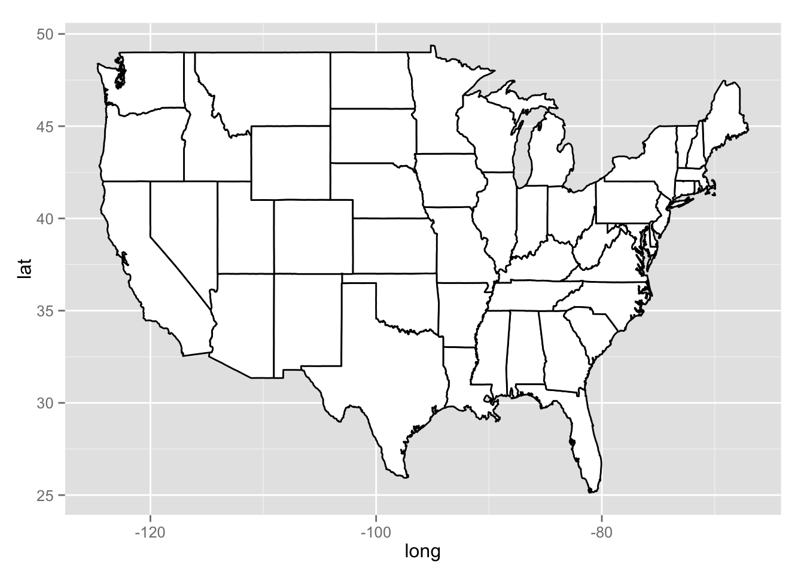

Spatio-Temporal Data Hackathon
Spatial Visualization Basics
Meg Williams
2015-10-24
Introduction
Map of States
#load library
library(ggplot2)
library(maps)
#load generic usa map data
all_states <- map_data("state")
states <- subset(all_states, region %in% c( "connecticut", "maine", "massachusetts", "new hampshire", "new york", "rhode island", "vermont" ) )
#plot all states with ggplot
p <- ggplot()
p <- p + geom_polygon( data=all_states, aes(x=long, y=lat, group = group),colour="black", fill="white" )
print(p)